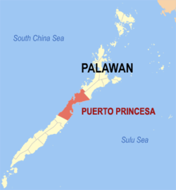

Puerto Princesa City
A tropical paradise with a bustling urban center perfect for business with leisure trips. Lush rainforests and white sand beaches are simply hours away from the city proper where a banking and commercial boom has made life easier for workaholics who can never run away from the office.Puerto Princesa City is a relatively young settlement. It was established as a city only in 1970.The first settlers arrived here almost a century earlier though, on March 4, 1872, celebrated every year hence as the foundation day of Puerto Princesa.
Puerto Princesa City Philippines sprawls across 253,982 hectares of land stretched over 106 kilometers, making it the country’s largest city. Its narrowest breath is in Bahile, where only 8.5 kilometers of land separate the east and the west coast.Puerto Princesa Philippines has 66 barangays, majority of which are rural settlements scattered in underdeveloped land. Inhabitants number about 150,000, most of them engaged in agriculture and fishing. A third of the population resides in the city proper, an urbanized settlement on the shores of Puerto Princesa Bay. With its huge trees and fresh air, the city has managed to retain its frontier ambience despite the onset of modern trends and structures.
Puerto Princesa City Profile
Puerto Princesa City, which forms part of the Philippine’s last frontier, is a City rich in natural resources. It is the country’s largest City with a total land area of 253,982 hectares. A chain of mountain ranges runs through the entire length of the City, dividing it into two distinct areas – the East and the West Coast. The eastern side, which is facing the Sulu Sea is characterized by thin strand lines bordered by swamplands, following a series of flat plains to hilly terrain. The West Coast has fewer plains with mountain ranges close to the China Sea, thus giving the City a unique yet fragile ecology.
A significant portion of the City retains its indigenous vegetation, rainforest, mangroves, and coastal ecosystem, all of which support an array of wildlife. In terms of species biodiversity and its wide range of ecosystems, Puerto Princesa is of national significance. The famous Puerto Princesa Subterranean River National Park (formerly known as Saint Paul’s Subterranean River National Park) covering a protected area of 22,202 hectares is haven to endemic flora and fauna.
Puerto Princesa Map
Puerto Prinsesa History
legend attributes the name "Puerto Princesa" to a princess-like maiden who in the early days is said to have roamed around the place on certain nights of the year. On the other hand, practical people attribute the name to the geographical advantages of the place as a seaport – naturally protected the whole year round and endowed with a depth that can accommodate any size of shipping – a royal heaven for vessels or a virtual princess of ports as thus indicated by Spanish Colonizers on the country’s map.
Historically, the place was named after Princess Asunción, born in 1864 to Queen Isabella II and her consort, Francisco de Cádiz. When the princess suffered an untimely death, the Queen changed the name to Puerto de la Princesa.
Today, the City has gained the distinction of being a model city – in cleanliness, environmental protection and conservation, and local governance in general.
And so, with a responsive leadership and an inspired citizenry, the tradition of Puerto Princesa being a beautiful and clean city lives on.
Key Facts
In the heart of Palawan lies the city of Puerto Princesa, a tropical paradise with a bustling urban center perfect for business with leisure trips. Lush rainforests and white sand beaches are simply hours away from the city proper, where a banking and commercial boom has made life easier for workaholics who can never run away from the office.Tourists will be glad to know that typhoons seldom hit Puerto Princesa. Like most of Palawan, the city’s climate consists of pronounced wet and dry seasons equally divided throughout the year. The wettest month is September while the driest month is February. From October to April, the northeast monsoon whips up waves on the coast facing the South China Sea. The southwest monsoon blows from April to August.
The best time to visit Puerto Princesa would be the summer months from April to June, when seas are usually calm. Humidity is high but annual average temperatures are comfortable at 27 degrees Celsius. Nights may be chilly during rainy days, especially in forested areas, so it is advisable for visitors to bring warm clothing at all times.Puerto Princesa sprawls across 253,982 hectares of land stretched over 106 kilometers, making it the country’s largest city. Its narrowest breadth is in Bahile, where only 8.5 kilometers of land separate the east and the west coast.